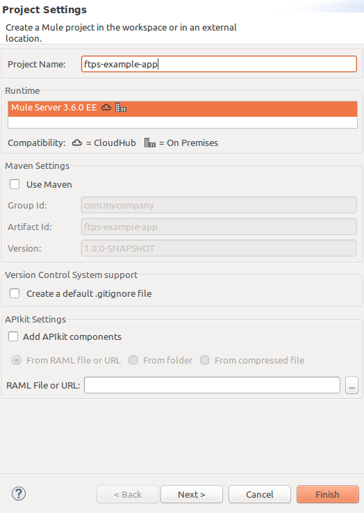
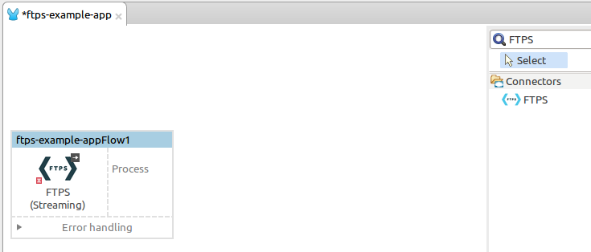
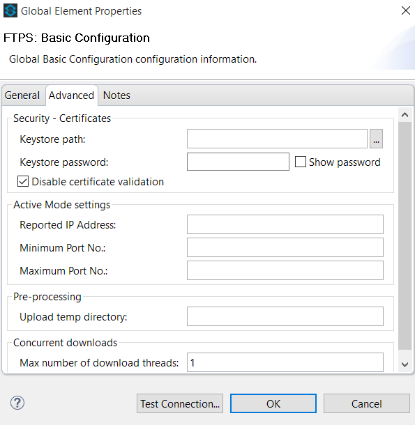
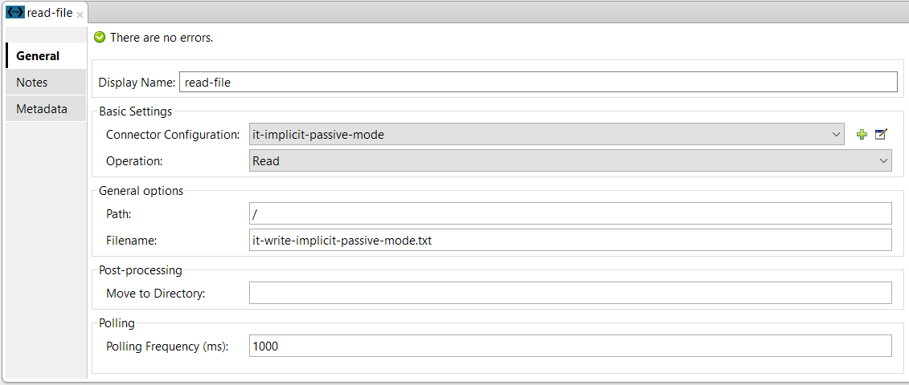
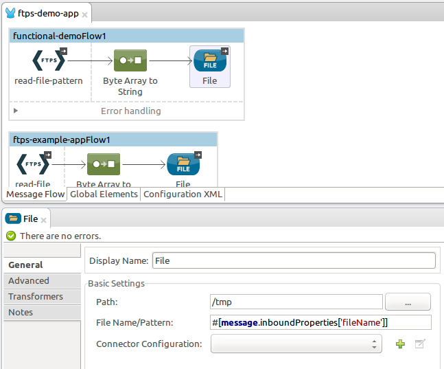
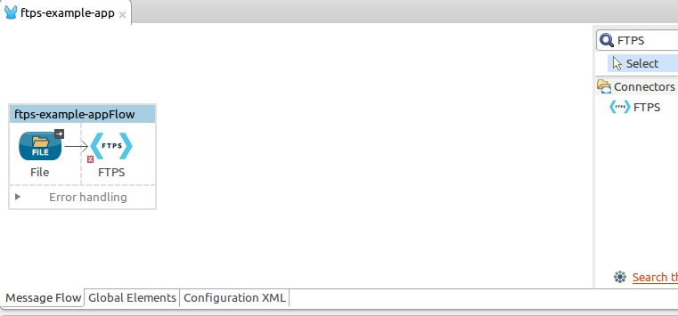
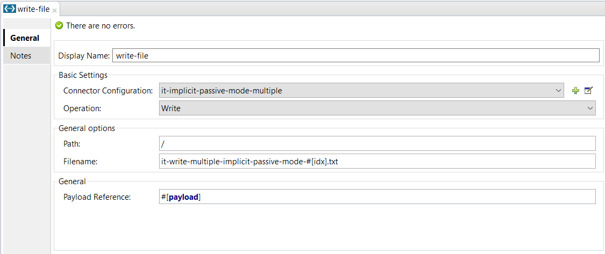

FTPS Connector
The FTPS Connector allows you to send and receive data over the FTPS protocol.
Introduction
The FTPS Connector allows you to send and receive files over FTP on top of a TLS/SSL connection.
After reading this page you should be able to accomplish the following:
-
Install the FTPS Connector.
-
Configure the FTPS Connector to fit your needs.
-
Build a Hello World project.
-
Run the example project.
Prerequisites
This document assumes that you are familiar with Mule and the Anypoint Studio interface. Furthermore, it is assumed that you are familiar with FTPS.
Installing and Configuring
Installing the FTPS Connector in Anypoint Studio
-
In Anypoint Studio, click the Exchange icon in the Studio taskbar.
-
Click Login in Anypoint Exchange.
-
Search for the connector and click Install.
-
Follow the prompts to install the connector.
When Studio has an update, a message displays in the lower right corner, which you can click to install the update.
Using the FTPS Module via Maven
If you wish to use the FTPS Module in conjunction with Maven, please follow the instructions here.
Using This Connector
Use Cases
-
Read file(s) over FTPS, alternatively using a wildcard pattern
-
Write file over FTPS
-
Transfer files using Active and Passive FTP modes
-
Transfer files using Explicit and Implicit SSL modes
Tips
-
Use passive mode whenever possible. It is easier to set up from the client’s perspective.
-
Polling the server is possible from the FTPS connector itself; there’s no need to use a Poll component. This is useful when waiting for a given file to be published by others.
-
The FTPS Connector supports compression out-of-the-box. If your FTP server supports deflate mode (known as “mode z”), the FTPS Connector detects this feature and enters compression mode for you.
Example Use Case - Hello World
The following examples explain the FTPS Connector configuration options for sending and receiving files.
Learn how to:
-
Receive a file over FTPS
-
Write a file on the server over FTPS
-
Receive one or more files over FTPS filtering by wildcard pattern
Read a File Over FTPS
In this example, the connector reads a file over FTPS and saves its contents locally.
Step 1
Create a new Mule Project using as run-time Mule Server 3.6.0 EE:

Step 2
Locate the FTPS Connector on the right hand-side palette:

Step 3
Drag and drop the FTPS connector over to the canvas:

Step 4
Create a connector configuration for the FTPS element

Step 5
Set the FTPS settings according to your scenario. In this example, we have an FTPS server running on localhost.

-
Connection settings
Set the host of your FTP server, this can be an IP address or a host name. Set the port the FTP server is listening to (control channel). Set whether you prefer active or passive connection modes. Fill in the blanks in the Advanced tab if you go for active. If you want to use explicit mode, select EXPLICIT in the Encryption mode field. The Streaming option is suitable for large files; instead of reading the contents to a byte array in memory; an input stream is passed as the payload to the next component in the flow. -
Security - FTP
Your username and password on the FTP server.Advanced settings can also be applied if needed. Read below for a brief description for each.

-
Security - Certificates (Optional)
If set, the FTPS connector validates your server’s identity with these certs. Only JKS format is supported at the moment. _If you want to disable server certificate validation, you’ll be able to find that option in this section as well, although it’s not recommended. -
Active Mode settings
These fields are going to be read in case ACTIVE was selected as Transfer Mode. The Reported IP Address is the external IP address to use if your application runs within a LAN and the FTP server is external to it. -
Pre-processing
The Upload temp directory sets the location on the server side where the files are going to be uploaded before they reach they final destination. -
Concurrent downloads
The number of worker threads to use when downloading multiple files (useful when reading files using a wildcard pattern or a directory).
Step 6
Now let’s set up the connector’s Read File operation to retrieve a file securely from the FTP Server. File contents are passed to the next processor in the flow.

-
Basic Settings
Select the Read operation -
General Options
Enter the path and filename of the file you aim to read from the server. In our case we’re transferring modus-test-read.txt which is located at the /demo directory of the FTP user we’ve set. -
Post-processing
After a file has been read, the connector attempts to delete it from the server unless Move to Directory is set to an existing location on the server. This field is optional. -
Polling
The connector polls the server for the specified file. By default it checks for the file every second. Once it gets it it continues to read the file and inject it into the flow.
Step 7
Now it’s up to you to decide what to do with the contents you’ve just read. In this example, we’re going to write the contents to a file. The FTPS connector can help us with that as it gives us 2 extra bits of information: the original filename and its size.

You should have your application ready to read a file securely from a FTP server you trust.
Step 8
Finally, run the example as a Mule application:

If the file exists on the remote FTP server, the Connector should read it and locate it under the /tmp folder as setup in Step 7.
Write a File on the Server Over FTPS
This example writes a file over FTPS using the contents received in the payload.
Steps 1 - 5
Follow steps 1-5 in the above example.
Step 6
Drag and drop the File message source into the canvas. Set it up to read any given file in your filesystem.
Step 7
Drag and drop the FTPS connector icon over the canvas, next to the File message source. This is how it should look like:

Step 8
Now let us set up the FTPS write file operation.

As you can see, we’re reusing the Global Configuration element from the previous example. Review Step 5 of the previous example for further details.
-
General options
As in the Read operation you can select which path to upload your file to. Under Filename you can enter any MEL expression you want; we’re setting a fixed name for simplicity.
Step 9
Save your changes and run the application. The application writes your file to the FTPS server under the name specified in the configuration.
Receive One or More Files Over FTPS Filtering by a Wildcard Pattern
This example receives one or more files over FTPS filtering by a wildcard pattern.
Steps 1 - 5
Same as in the previous example.
Step 6
Now let us setup the connector’s Read File using Pattern operation to retrieve a set of files securely from the FTPS server. Every time a file matches the pattern, the set up flow activates with the contents of the file.

Enter the path of the parent directory you aim to read the files from on the server.
Enter the File pattern as well; bear in mind this is a wildcard pattern. In our case we’re transferring every file that starts with “modusbox-”.
Step 7
Let us see an example of how to use the files we have just read. Drag and drop a File connector and set it up as follows:

The above screenshot shows that the files are saved in our local /tmp directory. Take a look at the File Name/Pattern configuration value. The fileName inbound property is added by the FTPS connector along with the fileSize property. These values can come in handy for when you need to deal with multiple files.
Step 8
Save your changes and run the application. The application reads files from the server matching the filename pattern and saves them locally under the same filename they had on the server.